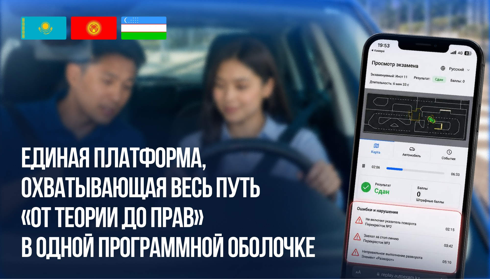
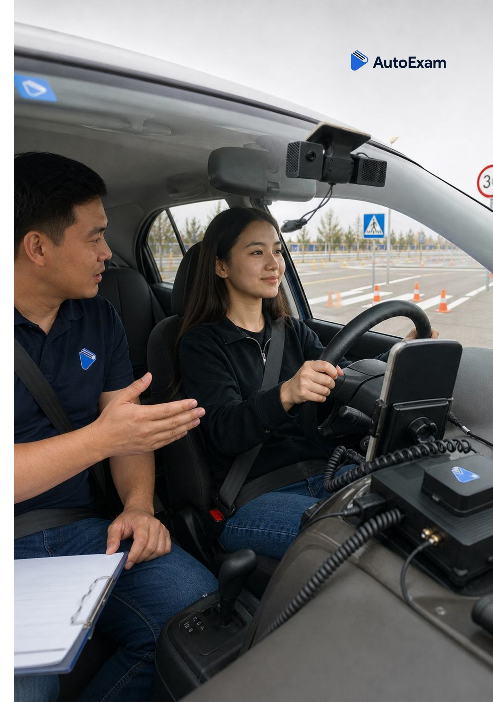
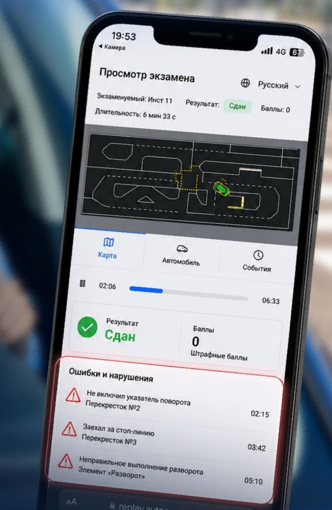
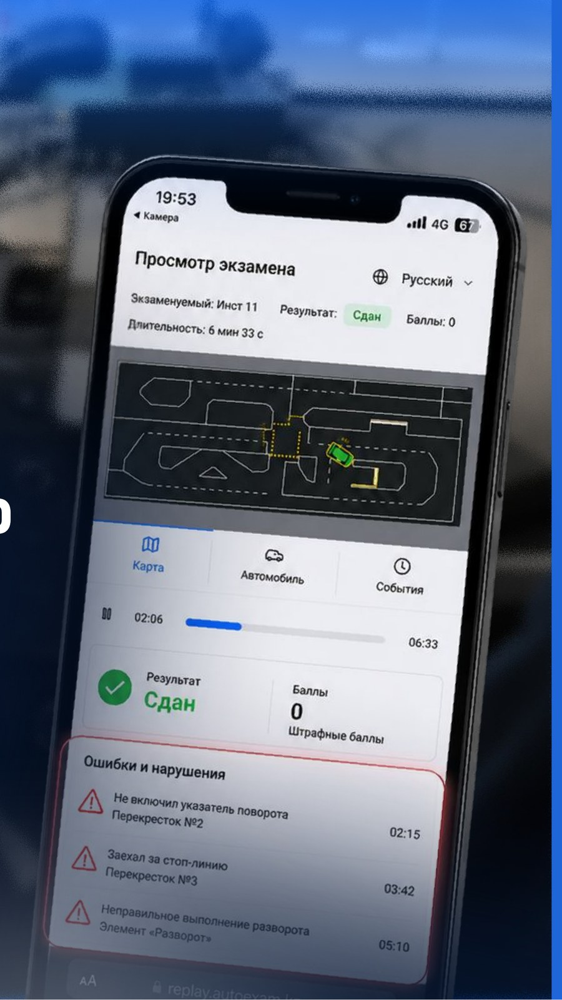

Готовый контур приёма теории и практики — без человеческого фактора, с полной доказуемостью каждого решения.
Готовый контур приёма теории развёрнут и готов к пилотному запуску.
Экзамен проходит с Edge-прокторингом, биометрической верификацией и автоматическим контролем посторонних лиц и запрещённых предметов. Ведётся прямая трансляция, а каждая попытка фиксируется в неизменяемом журнале. Результат невозможно скорректировать задним числом.
Gate-логика ведёт курсанта по этапам: теория → тесты → тренажёр. Система не позволяет пропускать обязательные разделы, автоматически фиксирует посещаемость и формирует полную историю подготовки.
Платформа уже разработана и готова к запуску без длительной разработки с нуля. Решение требует минимальных вложений со стороны государства и адаптируется под национальные билеты и языки.
Одинаковые правила и процедуры приёма теоретического экзамена на всех аккредитованных площадках вместо разрозненных ручных процессов.
Экзамены распределяются между аккредитованными точками, что снижает нагрузку на государственные площадки и сокращает очереди.
Регулятор видит, кто, где и когда проходил обучение и сдавал экзамен. Все действия сохраняются в неизменяемом журнале.
Система адаптируется под национальное законодательство, языки и экзаменационные билеты, а также интегрируется с государственными информационными системами.

Система автоматизации автодрома и сдачи практического экзамена по вождению — объективный вердикт «сдал / не сдал» без субъективной оценки инспектора.
От старта до вердикта «сдал / не сдал» — автоматически, на борту авто и на сервере автодрома.
Экзамен запускается с пульта диспетчера или из приложения инструктора; живое фото сверяется с эталоном (FaceNet).
Двухантенный RTK ведёт машину с точностью ±1 см и курсом ≤ 0,2°. Видео и телеметрия пишутся с первой секунды.
30+ типов: пересечение линий, зоны, элементы, время. Компьютерное зрение ловит светофор, ремень и поворотники.
«Сдал / не сдал» без инспектора. Видео, телеметрия и протокол нарушений уходят в защищённое хранилище.

Место под демонстрационное видео работы платформы. Заменим этот блок на встроенный ролик.
<video> или ссылку на YouTube/Vimeo вместо этого блока.
Вердикт выносит система, а не человек, коррупционные риски и жалобы снимаются.
Видео, телеметрия и протокол нарушений по каждому экзамену, всё воспроизводимо.
Единый стандарт приёма и агрегированная аналитика по всем площадкам сразу.